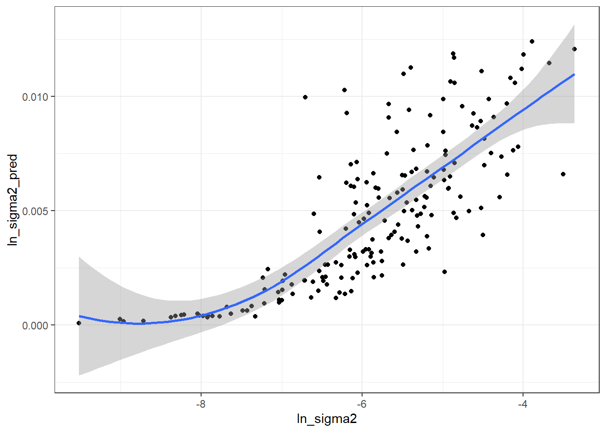

library(tidyverse)
library(magrittr)
source("0Recursos/0Funciones/0Source_FH.R")
encuesta <- readRDS("../Data/encuestaPER21N.rds") %>%
transmute(
depto,
provi = substr(ubigeo,1,4),
wkx = `_fep`,
upm = `_upm`,
estrato = `_estrato`,
pobreza = ifelse(ingcorte < lp, 1 , 0))Función Generalizada de Varianza (FGV)
CEPAL - División de Estadísticas Sociales
Uno de los insumos más importantes en el modelo de áreas es la varianza del estimador directo, a nivel de dominio, la cual no puede calcularse de ningún modo. En correspondencia, este valor debe estimarse desde los datos recolectados en cada dominio. Sin embargo, en dominios en las que se cuenta con un tamaño de muestra muy pequeño, estas estimaciones no tendrán un buen comportamiento. Por ende, es muy útil utilizar un modelo de suavizamiento de las varianzas para eliminar el ruido y la volatilidad de estas estimaciones y extraer la verdadera señal del proceso
Hidiroglou (2019) afirma que \(E_{mp}\left(\hat{\theta}^{dir}_d\right)=\boldsymbol{x}_{d}\boldsymbol{\beta}\) y \(V_{mp}\left(\hat{\theta}^{dir}_d\right)=\sigma_{u}^2+\tilde{\psi}^2_{d}\), en donde el subíndice \(mp\) hace referencia a la inferencia doble que se debe tener en cuenta en este tipo de ajustes y define la medida de probabilidad conjunta entre el modelo y el diseño de muestreo.
\(m\) hace referencia a la medida de probabilidad inducida por el modelamiento y la inclusión de las covariables auxiliares (\(\boldsymbol{x}_{d}\)).
\(p\) hacer referencia a la medida de probabilidad inducida por el diseño de muestreo complejo que induce las estimaciones directas.
La solución que acá se plantea se conoce con el nombre de Función Generalizada de Varianza, la cual consiste en ajustar un modelo log-lineal a la varianza directa estimada. Partiendo del hecho de que se tiene acceso a un estimador insesgado de \(\psi^2\), denotado por \(\hat{\psi}^2\) se tiene que: \[ E_{mp}\left(\hat{\psi}_{d}^{2}\right)=E_{m}\left(E_{p}\left(\psi_{d}^{2}\right)\right)=E_{m}\left(\psi_{d}^{2}\right)=\tilde{\psi}_{d}^{2} \]
La anterior igualdad puede interpretarse como que un estimador insesgado y simple de \(\tilde{\psi}_{d}^{2}\) puede ser \(\hat{\psi}_{d}^{2}\). Sin embargo, este estimador de muestreo es inestable cuando el tamaño de muestra es pequeño, que es justo el paradigma dominante en la estimación de áreas pequeñas. Rivest and Belmonte (2000) consideran modelos de suavizamiento para la estimación de las varianzas directas definidos de la siguiente manera:
\[ \log\left(\hat{\psi}_{d}^{2}\right)=\boldsymbol{z}_{d}^{t}\boldsymbol{\alpha}+\boldsymbol{\varepsilon}_{d} \]
En donde \(\boldsymbol{z}_{d}\) es un vector de covariables explicativas que son funciones de \(\boldsymbol{x}_{d}\), \(\boldsymbol{\alpha}\) es un vector de parámetros que deben ser estimados, \(\boldsymbol{\varepsilon}_{d}\) son errores aleatorios con media cero y varianza constante, que se asumen idénticamente distribuidos condicionalmente sobre \(\boldsymbol{z}_{d}\). Del anterior modelo, la estimación suavizada de la varianza de muestreo está dada por: \[ \tilde{\psi}_{d}^{2}=E_{mp}\left(\psi_{d}^{2}\right)=\exp\left(\boldsymbol{z}_{d}^{t}\boldsymbol{\alpha}\right)\times\Delta \]
En donde, \(E_{mp}\left(\varepsilon_{d}\right)=\Delta\). No hay necesidad de especificar una distribución paramétrica para los errores de este modelo. Al utilizar el método de los momentos, se tiene el siguiente estimador insesgado para \(\Delta\): \[ \hat{\Delta}=\frac{\sum_{d=1}^{D}\hat{\psi}_{d}^{2}}{\sum_{d=1}^{D}\exp\left(\boldsymbol{z}_{d}^{t}\boldsymbol{\alpha}\right)} \]
De la misma forma, al utilizar los procedimientos estándar en una regresión lineal, la estimación del coeficiente de parámetros de regresión está dada por la siguiente expresión:
\[ \hat{\boldsymbol{\alpha}}=\left(\sum_{d=1}^{D}\boldsymbol{z}_{d}\boldsymbol{z}_{d}^{t}\right)^{-1}\sum_{d=1}^{D}\boldsymbol{z}_{d}\log\left(\hat{\psi}_{d}^{2}\right) \]
Por último, el estimador suavizado de la varianza muestral está definido por:
\[ \hat{\tilde{\psi}}_{d}^{2}=\exp\left(\boldsymbol{z}_{d}^{t}\hat{\boldsymbol{\alpha}}\right)\hat{\Delta} \]
Datos de la encuesta
depto: Corresponde al código asignado a la segunda división administrativa del país.
lp linea de pobreza definidas por CEPAL.
Factor de expansión por persona (fep)
| depto | provi | wkx | upm | estrato | pobreza |
|---|---|---|---|---|---|
| 01 | 0101 | 72.5634 | 5007 | 4 | 0 |
| 01 | 0101 | 72.5634 | 5007 | 4 | 0 |
| 01 | 0101 | 72.5634 | 5007 | 4 | 0 |
| 01 | 0101 | 72.5634 | 5007 | 4 | 0 |
| 01 | 0101 | 72.5634 | 5007 | 4 | 0 |
| 01 | 0101 | 72.5634 | 5007 | 4 | 0 |
| 01 | 0101 | 72.5634 | 5007 | 4 | 0 |
| 01 | 0101 | 477.3727 | 5009 | 4 | 0 |
| 01 | 0101 | 477.3727 | 5009 | 4 | 0 |
| 01 | 0101 | 477.3727 | 5009 | 4 | 0 |
Definir el diseño muestral haciendo uso de las librerias srvyr y survey
library(survey)
library(srvyr)
options(survey.lonely.psu = "adjust")
diseno <-
as_survey_design(
ids = upm,
weights = wkx,
strata = estrato,
nest = TRUE,
.data = encuesta
)Para la estimación directa de la proporción se emplea la función direct.supr, disponible en el archivo 0Source_FH.R, dando como resultado.
directoprovi <- direct.supr(design.base = diseno,
variable = pobreza,
group = provi,
upm = upm,
estrato = estrato)
directoprovi %>%
group_by(Flag) %>%
summarise(n = n()) %>%
arrange(n) %>% tba()| Flag | n |
|---|---|
| Excluir | 12 |
| Incluir | 183 |
Para los dominios que no son excluidos se hace la transformación arcoseno, calculo del DEFF y varianza
base_sae <- directoprovi %>%
filter(Flag != "Excluir") %>%
transmute(
provi = provi, # Id para los dominios
nd = n, # Número de observaciones por dominios
n_effec = n.eff, # n efectivo.
pobreza = p, # Estimación de la variable
pobreza_T = asin(sqrt(pobreza)), # Transformación arcsin
vardir = ee ^ 2, # Estimación de la varianza directa
cv = CV,
var_zd = 1 / (4 * n_effec), # Varianza para la tranformación arcsin
deff_provi = deff # Deff por dominio
)
# View(base_sae)
tba(head(base_sae))| provi | nd | n_effec | pobreza | pobreza_T | vardir | cv | var_zd | deff_provi |
|---|---|---|---|---|---|---|---|---|
| 0101 | 685 | 391.9168 | 0.1319 | 0.3717 | 0.0009 | 22.4182 | 0.0006 | 1.7478 |
| 0102 | 764 | 93.7840 | 0.3247 | 0.6063 | 0.0057 | 23.2171 | 0.0027 | 8.1464 |
| 0103 | 200 | 21.8342 | 0.3273 | 0.6091 | 0.0172 | 40.1051 | 0.0114 | 9.1599 |
| 0104 | 440 | 232.4457 | 0.3822 | 0.6665 | 0.0043 | 17.1615 | 0.0011 | 1.8929 |
| 0105 | 769 | 367.1502 | 0.2271 | 0.4967 | 0.0015 | 16.7836 | 0.0007 | 2.0945 |
| 0106 | 369 | 237.3600 | 0.1230 | 0.3584 | 0.0016 | 32.2142 | 0.0011 | 1.5546 |
Seleccionando las variables de interés para la FGV.
baseFGV <- base_sae %>%
select(provi, pobreza, nd, vardir) %>%
mutate(ln_sigma2 = log(vardir))Análisis gráfico
theme_set(theme_bw())
# pobreza vs Ln_sigma2 #
p1 <- ggplot(baseFGV, aes(x = pobreza, y = ln_sigma2)) +
geom_point() +
geom_smooth(method = "loess") +
xlab("pobreza")
# Tamaño de muestra vs Ln_sigma2 #
p2 <- ggplot(baseFGV, aes(x = nd, y = ln_sigma2)) +
geom_point() +
geom_smooth(method = "loess") +
xlab("Tamaño de muestra")
# Número de pobres vs Ln_sigma2 #
p3 <- ggplot(baseFGV,
aes(x = pobreza * nd, y = ln_sigma2)) +
geom_point() +
geom_smooth(method = "loess") +
xlab("Número de pobres")
# Raiz_pobreza vs Ln_sigma2 #
p4 <- ggplot(baseFGV,
aes(x = sqrt(pobreza), y = ln_sigma2)) +
geom_point() +
geom_smooth(method = "loess") +
xlab("Raiz cuadrada de pobreza")
library(patchwork)
(p1 | p2) / (p3 | p4)Modelo para la varianza
library(gtsummary)
FGV1 <- lm(ln_sigma2 ~ 1 + pobreza +
nd + I(nd ^ 2) + I(pobreza * nd) +
I(sqrt(pobreza)) + I(sqrt(nd)) +
I(sqrt(pobreza * nd)),
data = baseFGV)
tbl_regression(FGV1) %>%
add_glance_table(include = c(r.squared, adj.r.squared))| Characteristic | Beta | 95% CI1 | p-value |
|---|---|---|---|
| pobreza | -9.0 | -14, -3.8 | <0.001 |
| nd | 0.00 | 0.00, 0.00 | 0.5 |
| I(nd^2) | 0.00 | 0.00, 0.00 | 0.4 |
| I(pobreza * nd) | 0.00 | 0.00, 0.01 | 0.6 |
| I(sqrt(pobreza)) | 13 | 4.9, 21 | 0.002 |
| I(sqrt(nd)) | -0.08 | -0.23, 0.06 | 0.3 |
| I(sqrt(pobreza * nd)) | -0.04 | -0.35, 0.26 | 0.8 |
| R² | 0.772 | ||
| Adjusted R² | 0.763 | ||
| 1 CI = Confidence Interval | |||
Ponderador FGV
delta.hat = sum(baseFGV$vardir) /
sum(exp(fitted.values(FGV1)))
delta.hat[1] 1.209785Varianza suavizada para los dominios observados
hat.sigma <- data.frame(provi = baseFGV$provi,
hat_var = delta.hat * exp(fitted.values(FGV1)))
baseFGV$ln_sigma2_pred <- hat.sigma$hat_var
tba(head(hat.sigma, 10))| provi | hat_var |
|---|---|
| 0101 | 0.0014 |
| 0102 | 0.0033 |
| 0103 | 0.0078 |
| 0104 | 0.0054 |
| 0105 | 0.0024 |
| 0106 | 0.0021 |
| 0107 | 0.0014 |
| 0201 | 0.0021 |
| 0202 | 0.0075 |
| 0206 | 0.0111 |
Validación del modelo para la FGV
par(mfrow = c(2, 2))
plot(FGV1)Comparación entre varianza estimada con pronosticada por la FGV
ggplot(baseFGV,
aes(x = ln_sigma2, y = ln_sigma2_pred)) +
geom_point() +
geom_smooth(method = "loess")
Predicción de la varianza suavizada
prediccion_ln_0 = predict(FGV1, newdata = base_sae %>%
filter(!is.na(pobreza)))
base_sae <- base_sae %>%
left_join(hat.sigma, by = "provi")
base_sae$hat_var[base_sae$vardir == 0 & !is.na(base_sae$vardir)] <-
delta.hat * exp(prediccion_ln_0)Organizando la información para exportar, realizamos validaciones adicionales sobre el deff
base_FH <- base_sae %>%
mutate(
deff_provi = ifelse(is.nan(deff_provi), 1,
deff_provi),
deff_FGV = ifelse(
vardir == 0 ,
1,
hat_var / (vardir / deff_provi)
),
# Criterio MDS para regularizar el DeffFGV
deff_FGV = ifelse(deff_FGV < 1, 1, deff_FGV),
n_eff_FGV = nd / deff_FGV
)
saveRDS(object = base_FH, "../Data/base_FH_2021.rds")Análisis gráfico
ggplot(base_FH %>% filter(!is.na(hat_var)) %>%
arrange(nd), aes(x = hat_var, y = vardir)) +
geom_point() +
geom_smooth(method = "lm", col = 2) +
labs(x = "FGV", y = "VarDirEst") +
ylab("Varianza del Estimador Directo")